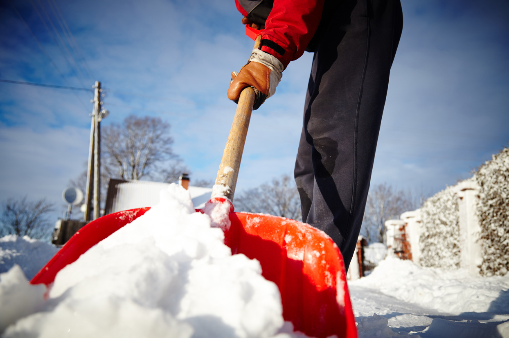
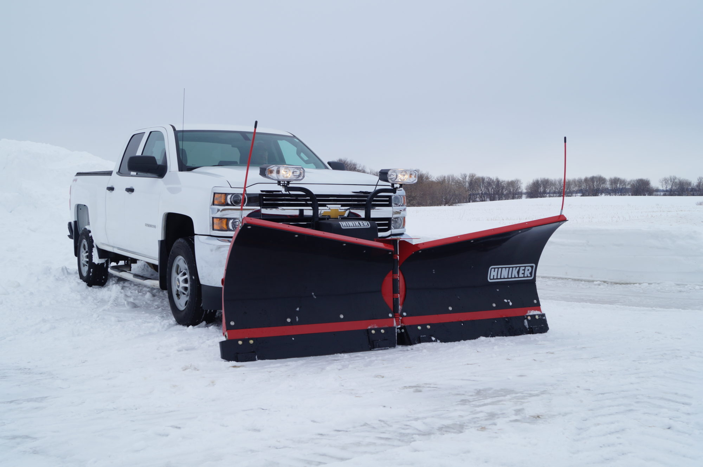
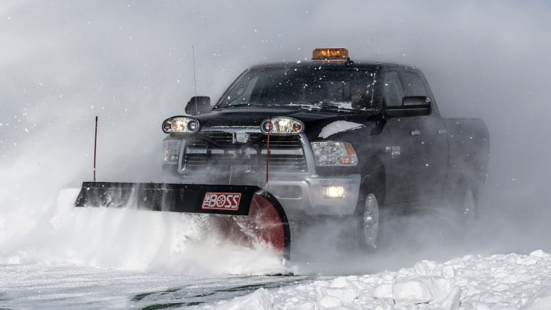

Our Shoveling Services
Basic Snow Shoveling- $50
Description: Ideal for small properties or light snowfall, our Basic Shoveling Service offers a quick and efficient solution to keep your walkways and driveways clear. This service includes manual shoveling of the main entrance, walkways, and a standard-sized driveway. Our team ensures a prompt response after snowfall, providing you with a safe and accessible outdoor space.
Commercial Snow Removal- $150
Description: Our Premium Package is perfect for those needing extra care during heavy snowfall. This service includes all the benefits of the Basic Service, plus de-icing treatment for walkways and driveways to prevent ice buildup. Additionally, we extend our shoveling to cover patios, steps, and additional paths around your property. This package is ideal for ensuring maximum safety and accessibility during the winter months.
Full Winter Package- $300
Description: The ultimate solution for hassle-free winters, our Platinum Service is designed for complete peace of mind. This all-inclusive package features regular shoveling, de-icing, and snow removal after every snowfall, regardless of the amount. It also includes priority response, ensuring your property is tended to as a top priority. This package is ideal for large properties or those in areas with frequent and heavy snowfall. Additionally, it includes a mid-season check-up to address any concerns and ensure continued quality service throughout the winter season.